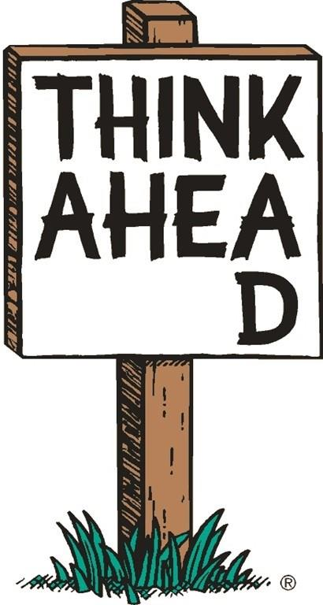

Open Science
Julian Quandt
Radboud University
Preregistration
What is Preregistration?

Before seeing the data
-
What can I expect from the results?
-
e.g. alternative hypotheses
-
What do I need to keep in mind
when conducting my experiment?
-
e.g. sample size, exclusion criteria
-
How will I answer my question?
-
e.g. confirmatory and exploratory
Beyond Preregistration
Open Data & Material
-
Your data and material might be very valuable to other people
Open Source & Open Access
-
Use Open Source software whenever possible — Many scientists are not as lucky as we are to afford Inquisit and SPSS… it also saves money
-
Make sure other people could reproduce what you did (Reproducability!)
-
make your manuscript available (Preprints / Postprints / Open Access Journals)